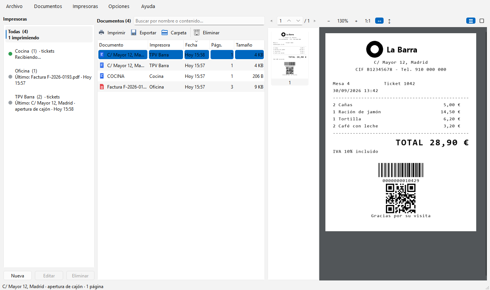

Todo lo que imprimes, guardado y fácil de encontrar
Impresoras virtuales gratuitas para Windows que guardan un historial visual de cada documento PDF y de cada ticket de TPV (ESC/POS), por USB o por red.
Gratis · Windows 10/11 · Se instala sin permisos de administrador · Versión 1.0.0 · 29,7 MB

Qué hace
Imprime como siempre desde cualquier programa. Virtual Printer captura cada trabajo, guarda el original y lo muestra en un historial con búsqueda.
Varias impresoras virtuales
Crea las que necesites («Facturas», «Barra», «Cocina»…) y mira casi en tiempo real lo que se imprime en cada una.
Tickets de TPV (ESC/POS)
Los tickets se dibujan igual que en una impresora térmica: estilos de texto, logos, códigos de barras y QR, en 80 o 58 mm.
Por USB o por red
Como impresora de Windows para programas que imprimen en impresoras USB, o como impresora de red en el puerto 9100 para TPV que imprimen por IP.
Busca dentro de los documentos
Encuentra cualquier documento o ticket por su nombre o por su contenido, y filtra por impresora.
Visor, exportar y reimprimir
Todas las páginas con zoom y miniaturas. Exporta el PDF original o reenvía un ticket, idéntico, a una impresora de tickets real.
Discreta en la bandeja
Se inicia con Windows, vive en la bandeja del sistema y avisa de cada documento nuevo. En español e inglés.
Empieza en tres pasos
No necesitas instalar nada más.
- Descarga el instalador y ejecútalo. No pide permisos de administrador y añade Virtual Printer al menú Inicio.
- Pulsa Nueva y elige el tipo: documentos (PDF), tickets en una impresora de Windows o tickets por red.
- Imprime desde tu programa eligiendo la nueva impresora. El trabajo aparece en el historial en unos segundos.
Windows pide permiso de administrador solo para crear o renombrar impresoras de Windows. Las de red no lo necesitan.
Ayuda a traducirla
Virtual Printer está en inglés y en español. Las traducciones son archivos .po que cualquiera puede editar con Poedit, una herramienta gratuita: no hace falta programar.
Cómo funciona
Abre la plantilla en Poedit, crea tu idioma y traduce. Copia el archivo en %USERPROFILE%\.virtual_printer\locales, reinicia la app y elige tu idioma en Opciones › Idioma para verlo en directo. Después avísanos con el formulario de contacto.
Gratis, y seguirá siéndolo
Virtual Printer es gratuita, sin anuncios ni versión de pago. Si te ahorra tiempo, puedes apoyar su desarrollo con un café.
Contacto
Dudas, problemas, ideas o una traducción que quieras enviar: escríbenos y te responderemos por correo.
Solo usamos tus datos para responderte. Consulta la política de privacidad.
Preguntas frecuentes
¿De verdad es gratis?
Sí. Puedes usarla gratis, en casa o en el trabajo, en todos los equipos que quieras. No tiene anuncios ni versión de pago; las donaciones son voluntarias.
Windows SmartScreen me avisa al abrir el instalador
El instalador aún no está firmado digitalmente. Pulsa «Más información» › «Ejecutar de todas formas».
¿Con qué programas de TPV funciona?
Con cualquier programa que imprima tickets ESC/POS en una impresora de Windows (elige «Generic / Text Only») o en una impresora de red por IP (puerto 9100). Si el programa imprime con gráficos de Windows, usa el driver de tu impresora de tickets (p. ej. POS80).
¿Dónde se guardan mis documentos?
Solo en tu equipo, en %USERPROFILE%\.virtual_printer. La app no envía tus documentos ni datos de uso a ningún sitio.
¿Qué necesito?
Windows 10 u 11 de 64 bits. La característica «Microsoft Print to PDF» para las impresoras de documentos, que Windows trae de serie.
¿Cómo la desinstalo?
Si ya no quieres las impresoras virtuales, elimínalas antes desde la app; después desinstala Virtual Printer desde Configuración › Aplicaciones de Windows. Tus documentos capturados se conservan en tu carpeta de usuario hasta que los borres.